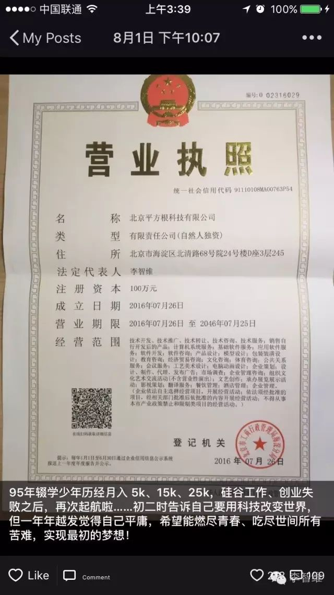
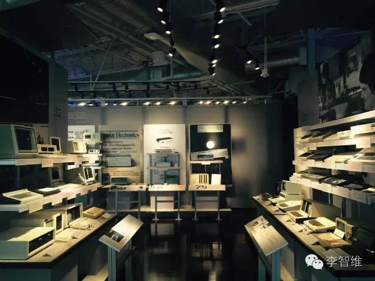

تحقيق الأهداف الصغيرة مع الرئيس التنفيذي البالغ من العمر 21 عامًا | أصلي، ترجم بواسطة AI

这是我 3 月份去硅谷时在 Y Combinator 拍的照片。屋子里一群人在创业，来自世界各地，年龄多在 20 出头，诸如来自 MIT 大二大三的学生等等。给我的感觉是同龄人最顶尖的一帮人已经走在了创业的路上了。自己不来创业的话，就会更加落后。于是，再一次，重新起航。

حصلت على 218 إعجابًا، أشكر كل صديق على دعمه.
我是如何一步步走到今天的呢？是什么动力促使21岁的我不顾一切地冲出去，坚定地要把事情做成呢？
الخبرات
我的经历。简单的，初中开始写代码，参加算法竞赛。大一进入了北京林业大学，写了多个 Android 应用，有学校 3500 人使用的「北林助手」，有拿过黑客马拉松三等奖之后开发了数个月的「iword」。大一暑假在 LeanCloud 实习，接着退学了在 LeanCloud 工作了一年半，从一开始的菜鸟到后来能在前谷歌阿里豌豆荚同事中绩效排前一半，给公司同时做了 Android 和 iOS 版的应用「LeanChat」，还写了不少 Demo，也开发公司的 iOS SDK，算对得起公司恩赏的 15k 薪水。接着15年11月，和叶孤城等小伙伴创立了 「Reviewcode.cn」，后办交流会、培训班，营收 15 万。在团队里我负责后端、一半的前端开发和一半的培训，推动产品做起来、事情落实到位。3月份的时候，去了一趟硅谷学习，去 Google 参观，去世界上最牛的孵化器 YC 感受创业，途中也有很好的一次在硅谷工作的机会，不过放弃了。后来回国后在6月份，团队方向出了问题没再继续下去。我加入了前聚美副总裁叶老板和前聚美 CTO 杨Jun哥二次创业的公司，和他们时常干到两三点。这段日子，平时一有机会我就和他们聊天，两位老板都是30出头年轻有为的典范，教了我很多东西。不过我性子真的太急了……对不起老板们的厚望，自己又出来创业了……
وهكذا، في سن الحادية والعشرين، وقبل أن أبدأ السنة الرابعة في الجامعة، قررت التخلي عن راتب قدره 25 ألفًا والعودة إلى ريادة الأعمال مرة أخرى. في الواقع، الأشخاص الذين عملت معهم سيفهمونني بشكل أفضل، والتقديم أعلاه هو مجرد وصف سطحي. على سبيل المثال، يمكنني العثور على وظائف تتراوح رواتبها بين 20 إلى 30 ألفًا في مجالات iOS وAndroid والخلفية والأمامية، كما تلقيت أيضًا دعوات من بعض الشركات الناشئة للعمل كمدير تقني.
ومع ذلك، ما زلت مبتدئًا. أرجو من الخبراء الذين يقرأون هذا المقال ألا يسخروا مني. في النهاية، تعرفت على العديد من الأشخاص، ولديّ فكرة جيدة عن مستواي الحالي.
لماذا نبدأ مشروعًا؟
في عالم اليوم سريع الخطى، أصبحت ريادة الأعمال أكثر من مجرد خيار؛ إنها طريقة حياة. سواء كنت تبحث عن تحقيق الاستقلال المالي، أو تحويل فكرة مبتكرة إلى واقع، أو ببساطة تريد أن تكون سيد نفسك، فإن بدء مشروعك الخاص يمكن أن يكون الطريق لتحقيق ذلك. لكن لماذا نبدأ مشروعًا؟ دعونا نستكشف بعض الأسباب الرئيسية التي تدفع الناس إلى خوض هذه المغامرة المثيرة.
1. الاستقلالية والتحكم
واحدة من أكبر الفوائد لبدء مشروعك الخاص هي القدرة على التحكم في مصيرك. أنت تقرر الاتجاه الذي تريد أن تسير فيه، وتحدد أولوياتك، وتتحمل مسؤولية نجاحك أو فشلك. هذه الحرية يمكن أن تكون محررة للغاية وتسمح لك بتحقيق أهدافك الشخصية والمهنية.
2. تحقيق الشغف
ريادة الأعمال تتيح لك تحويل شغفك إلى مهنة. سواء كنت شغوفًا بالتكنولوجيا، أو الفن، أو التعليم، أو أي مجال آخر، فإن بدء مشروعك الخاص يمنحك الفرصة للعمل في شيء تحبه حقًا. هذا يمكن أن يجعل العمل أكثر متعة ورضا.
3. الإمكانيات المالية
بينما لا يوجد ضمان للنجاح المالي، فإن ريادة الأعمال تقدم إمكانيات غير محدودة لكسب الدخل. يمكن أن يكون المشروع الناجح مصدرًا للثروة والاستقرار المالي، مما يسمح لك بتحقيق أحلامك وتأمين مستقبلك.
4. التأثير والتغيير
ريادة الأعمال تمنحك الفرصة لإحداث فرق في العالم. سواء كان ذلك من خلال تقديم منتج أو خدمة جديدة، أو حل مشكلة اجتماعية، أو خلق فرص عمل للآخرين، يمكن أن يكون لمشروعك تأثير إيجابي على المجتمع.
5. التعلم والنمو
بدء مشروعك الخاص هو تجربة تعليمية لا مثيل لها. ستواجه تحديات، وستتعلم من أخطائك، وستنمو كشخص ومحترف. هذه الرحلة يمكن أن تكون مجزية للغاية وتساعدك على تطوير مهارات جديدة وفهم أعمق لنفسك وللعالم من حولك.
6. المرونة
ريادة الأعمال تمنحك المرونة في تحديد جدولك الزمني وأسلوب حياتك. يمكنك العمل من أي مكان، واختيار ساعات العمل التي تناسبك، وموازنة العمل مع الحياة الشخصية. هذه المرونة يمكن أن تكون ذات قيمة كبيرة، خاصة إذا كنت تبحث عن توازن أفضل بين العمل والحياة.
7. الإرث
أخيرًا، بدء مشروعك الخاص يسمح لك بترك إرث. يمكن أن يكون مشروعك شيئًا يدوم لفترة طويلة بعد أن تتركه، سواء كان ذلك من خلال الشركة التي بنيتها، أو التأثير الذي أحدثته، أو الأشخاص الذين ألهمتهم.
في النهاية، ريادة الأعمال ليست للجميع، ولكن بالنسبة لأولئك الذين لديهم الرؤية والعزيمة، يمكن أن تكون واحدة من أكثر التجارب المجزية في الحياة. إذا كنت تفكر في بدء مشروعك الخاص، فخذ الوقت الكافي لتقييم أهدافك، وفهم التحديات، والاستعداد للرحلة. النجاح قد لا يكون مضمونًا، ولكن الفرص والإمكانيات لا حدود لها.
في البداية، لم أكن أملك الشجاعة للبدء في مشروعي الخاص، حيث بدا لي أن الأمر معقد للغاية. من أين سيأتي المال؟ من أين سأجد الأشخاص المناسبين؟ ماذا يجب أن أفعل؟ وغيرها من الأسئلة. حتى كيفية تسجيل الشركة كانت أمرًا غامضًا بالنسبة لي. ولكن بعد المرور بالعديد من التجارب، ورؤية الكثير من الأشخاص والأحداث، اكتسبت الشجاعة والثقة بشكل طبيعي.
في الصيف الذي تلا انتهاء امتحانات الكوليج، قمت بأمرين: 1) تعلمت لغة Lisp 2) قرأت كتاب “Hackers & Painters” عدة مرات. في ذلك الوقت، كنت قد قضيت سنوات في منافسات الخوارزميات دون تحقيق أي إنجاز يذكر، كما أنني لم أحقق أداءً جيدًا في امتحانات الكوليج. من ناحية، كنت أتعرض للإذلال من قبل أساطير مثل Chen Lijie الذين فازوا بميداليات ذهبية دولية. ومن ناحية أخرى، كنت أتعرض للإذلال من قبل آلاف الأشخاص الذين تفوقوا علي في امتحانات الكوليج. كنت حقًا شخصًا عاديًا، وكانت ثقتي الزائدة بنفسي مجرد وهم… عندما كنت صغيرًا، كنت أعتقد أنني سأصبح شخصًا رائعًا عندما أكبر، ولكن الواقع هو أنني أدركت أكثر فأكثر أنني شخص عادي للغاية. لذلك، كنت أشعر بضغط كبير، وكنت بحاجة إلى القيام بشيء ما لتغيير هذا الوضع.
来北京的第一天，我就跑去参加了CSDN举办的中国软件开发者大会。在那里，我有幸和大话西游的主程云风前辈聊了一下。我问他，你们当年刚开始写代码的时候有和谁交流吗？他笑着回答说，没有啊，就自己欣赏呗。刚好看到有人在讲Lisp，是LeanCloud的技术负责人Dennis大哥。他讲完后，我偷偷地跑到第一排，和他聊天，看看他都用什么软件来写代码。回来后，我去网上查了一下，才知道Dennis大哥之前是阿里的中间件技术专家，做了些开源项目，京东、腾讯等大厂都在使用。
后来我通过邮件联系了Dennis哥，于是来到了LeanCloud实习并最终工作。在这里的一年半时间里，我用心观察同事和老板的言行，向他们学习他们出色的地方。我们的老板江宏，是耶鲁大学的博士，曾在谷歌工作了三年，之后回国创业，先是创办了美味书签，后来又创立了LeanCloud。我通过日常的点点滴滴去了解为什么老板能够做到这一切。Dennis作为技术负责人，不仅承担了技术上的重任，还负责日常的技术管理工作。他持续的高产出总是让我很好奇他是如何做到的。其他同事也都是各自领域的佼佼者。感谢在LeanCloud这段如此棒的“大学”经历。
LeanCloud 在微软孵化器办公了超过半年时间，因此结识了隔壁一些公司的朋友和老板们，比如功夫熊的WR、LX等，以及量化派的许多人。他们之前是百度视频的产品负责人，后来出来创业了。其中一些人是从华尔街、谷歌回来创业的。还有一些公司的团队成员全部来自清华。
在微软孵化器的日子里，我其实认识了很多人，Matt Scott，码隆科技的 CTO，之前是微软的资深开发主管，也是多篇世界顶级会议论文的作者。在苏州街深夜两点的路上，他对我说：“小伙子，要有耐心，打造你的核心技能。要想做出世界一流的工作，不仅需要好奇心，还需要那种改变世界的憧憬。去想象有一天，你的工作会对世界产生巨大的影响。”
后来也认识了一些厉害的同龄人，比如JZP，当时他想来LeanCloud实习，感受一下创业公司的氛围，就通过邮件联系了我。ZP在初二的时候就获得了全国信息学竞赛一等奖。现在他在清华姚班，大学假期都是在微软、谷歌实习的大牛。平时他会读浏览器引擎、Mongodb的源码，研究深度学习。偶尔还会去参加ACM竞赛，拿个一等奖放松一下。接触了几次之后，我发现这些人因为常年都在研究非常难的问题，所以我觉得很难的问题对他们来说都不是事。他们对事物的原理充满好奇心，喜欢的事情都会研究得非常深入。
后来宜龙加入了公司，他的微博「iOS 程序犭袁」拥有两万多粉丝，其中大部分是 iOS 工程师。我帮助宜龙熟悉公司业务，而宜龙则帮忙转发我的开源项目，吸引了一些人关注。名气确实是个好东西，虽然工程师应该专注于默默写代码、提升技术，但有了名气之后，做出的东西才会吸引更多人关注和提出意见。公司也是如此，不仅要有好产品，还需要有好的市场推广。
في نوفمبر، تعرفت على Ye Gucheng، وهو أيضًا شخصية بارزة في مجتمع iOS. أثناء تناولنا للعشاء معًا، خطرت لنا فكرة مشروع ريادي، وتحدثنا عنها بسعادة. كنت في الأصل أرغب في بدء مشروعي الخاص، ووجدت هذه الفرصة بمثابة شرارة للبدء، فانطلقت في رحلة ريادية. بعد شهرين أو ثلاثة من التطوير، أطلقنا المنتج “Reviewcode.cn” في منتصف فبراير، وبحلول نهاية فبراير، كان لدينا حوالي 8000 زيارة يومية (PV). لكننا اكتشفنا أن هذه الفكرة ليست ذات طلب قوي، كما شعرنا أن قدراتنا خارج الإنترنت كانت ضعيفة للغاية، فقررنا تحويل اتجاهنا إلى تنظيم اجتماعات تبادلية وورش عمل، ومحاولة تنظيم فعاليات خارج الإنترنت والتعامل مع الأشياء المادية. لاحقًا، كنت أقضي كل يوم في مرافقة الطلاب لتعلم البرمجة، وفي المساء كنت أقدم دروسًا على منصة Douyu، بحيث يمكن للجميع متابعتها سواء عن بُعد أو حضورًا. الشعور الذي خرجت به هو أن الأشياء المادية يمكن القيام بها إذا أردنا ذلك، لكنها تتطلب الكثير من الجري هنا وهناك والتعامل مع التفاصيل، ولم تكن صعبة كما كنا نتخيل.
في شهر مارس، قمت بزيارة إلى وادي السيليكون. بمساعدة مساعد التدريس XH الذي كان مساعدي في السنة الأولى، ذهبت لتناول الإفطار في Google وقمت بجولة في المنطقة. تعرفت على زملائه وزملائه في السكن، الذين درسوا في جامعة بكين وجامعة العلوم والتكنولوجيا في الصين، ثم جاءوا إلى Google بعد التخرج. ثلاثة أشخاص يستأجرون فيلا كبيرة، ويذهبون إلى العمل بالسيارة في الأيام العادية. في عطلات نهاية الأسبوع، يذهبون للاستمتاع في يوسمايت ونيويورك. لقد شهدت نمط حياة مختلف تمامًا.

زرت متحف تاريخ الحاسوب، وشاهدت روائع الأجيال السابقة، من العداد إلى التطور التدريجي للحواسيب الشخصية.

في أثناء تجوالي في ستانفورد، تعرفت على بعض الأشخاص المتميزين جدًا، منهم زميل يدرس الدكتوراه في علم الأحياء هنا، وشاب أمريكي نشأ محليًا ويدرس في قسم علوم الكمبيوتر في ستانفورد، وصديق تخرج من كامبريدج ويحضر الآن الدكتوراه في الكيمياء هنا.
ثم ذهبت إلى Y Combinator، حيث قابلت العديد من الشباب الذين كانوا يبدأون مشاريعهم هنا. تعرفت على فريق صيني يُدعى “Mailtime”، والذي يُعرف بالصينية باسم “简信”. الرئيس التنفيذي HH هو رائد أعمال متسلسل، وكان قد طور سابقًا Talkbox، الذي يُعتبر رائدًا في وظائف الدردشة الصوتية. قال إنه عندما كان يتحدث مع والده، وكان والده لا يعرف الكتابة، فكر في إمكانية إرسال رسائل صوتية للدردشة. فريق Mailtime أيضًا مميز جدًا، المؤسس المشارك Hockey كان قد فاز بالجائزة الأولى في مسابقة الخوارزميات الوطنية في المدرسة الثانوية، وتخرج من جامعة تسينغهوا وجامعة بيركلي، وعمل في Twitter لمدة عامين؛ Evan تخرج من جامعة تسينغهوا وجامعة كارنيجي ميلون؛ الأخت YX وFrank وغيرهم أيضًا تخرجوا من جامعة هونغ كونغ الصينية وهم أشخاص مميزون جدًا. أخبروني عن ذهابهم إلى حفلة في منزل مؤسس Gmail، وكيف كان منزلهم فاخرًا جدًا.
في جانب الإقامة، تعلمت الكثير أيضًا. مضيف Airbnb كان من السكان المحليين، وقد عرف عن ستيف جوبز منذ أن أدرجت شركة Apple في البورصة عام 1984، وكان يتابع أخباره على مدار العقود. أخبرني أن التكنولوجيا العالية تتطلب الكثير من الطاقة، وهي أمور يهتم بها الشباب. فجأة شعرت أن ستيف جوبز قريب جدًا مني.
还去看了场NBA比赛，去了沙滩、金门大桥、联合广场、旧金山市政府等地方游玩。世界真大，每天说英语也很有趣。那种探索世界、结识各种各样的人，不知道今天会遇到什么的感觉真是美妙。比如在吧台上和隔壁的美女聊天，她是个编导，向我展示她去滑雪、欣赏各种美丽自然风景的照片。她、夕阳、无边无际的雪，美得令人窒息。事业有成，又到处游玩，想不到人生竟可以如此灿烂。

في شهر يونيو، واجه الفريق بعض المشاكل في الاتجاه. في ظل الظروف الصعبة، بدأت في البحث عن عمل، وتعرفت على السيد Ye، نائب رئيس Jumei السابق، الذي كان في ذلك الوقت يقوم ببناء فريق لمنصة التسوق المباشر “Paipai Jiang”. حياة السيد Ye مذهلة أيضًا، فقد تخرج من جامعة بكين للمعلمين، وبعد عام من العمل، أسس في سبتمبر 2009 موقع “Fenpi’er” للتجارة الإلكترونية لمستحضرات التجميل، وبعد منافسة شرسة مع Jumei لمدة عام تقريبًا، اندمج مع Jumei في أبريل 2011، ثم شغل منصب نائب رئيس سلسلة التوريد، حتى إدراج Jumei في البورصة في عام 2014، وبعد ذلك تولى مسؤولية بناء متجر Jumei السريع المعفي من الضرائب، وفي عام 2015 ترك Jumeي وأصبح مستثمرًا ملاكًا لمدة عام. إنه رائع حقًا، إنها الحياة التي أريدها! كما أن CTO Yang Jun أيضًا شخصية رائعة، فقد كان سابقًا CTO لـ Jumei، وقبل ذلك كان قد أسس شركة وباعها. لذلك وافقت على الانضمام إليهم!
在拍拍酱的一个月里，平时有空就和叶老板聊天，吃饭的时候端个盘子过去跟老板一起吃，晚上看老板有空的时候跟他在走廊里转几圈。聊他们当初是怎么创业的，聊怎么搞定品牌合作的，听他说运营怎么弄。他说，尽管用户不喜欢，也去问清楚到底为什么不喜欢。不要怕 push 别人，要学会去 push。催一次不行，就催第二次、第三次，一直催。不要老是自己搞，不懂就问、厚脸皮地去问。叶老板也是很拼的人，经常两三点还在等面试的人，一天忙碌个不停。周六休息的时候，也是在把玩 App，测试产品。我们经常搞到11点之后，有时搞到两三点，一周六天。所以除了睡觉时间，几乎没有任何业余时间。我们都是比较自愿如此。这就是厉害的地方，他能找到我们这一帮有拼的潜质的人，然后让我们拼起来。
بعد أن مكثت هناك لمدة أسبوع، سألني: “هل تحبين هذا المكان؟” فأجبته: “نعم، أحبه، وأنا أعمل بكل طاقتي، ومهما كان ما سنفعله في المستقبل، فإن هذا سيكون أفضل لمستقبلنا.” فقال: “نعم، كلما اجتهدنا الآن، كان المستقبل أفضل.” ربما كان يفكر في داخله: “هذه موظفة رائعة حقًا.” هاها. في الحقيقة، الأمر كذلك، لم أكن أحاول إرضاء المدير عن قصد. أنا الآن نادمة لأنني لم أجتهد أكثر في بعض الأيام السابقة في العمل، مما كان سيمكنني من أن أكون أكثر قدرة على بدء مشروعي الخاص.
لقد قدم لي الرئيس مثالاً يحتذى به كرئيس تنفيذي، بينما قدم لي جونغ أخي مثالاً يحتذى به كرئيس تقني. في الأسبوعين الأولين، كنت غالبًا ما أبقى مع جونغ أخي حتى ساعات الصباح الباكر. جونغ أخي، الرئيس التقني السابق لـ Jumei، وهو أيضًا شخص يمتلك العديد من العقارات، ومع كل هذا النجاح، ما زال يعمل بجد، فما هو عذري أنا الضعيف لألا أبذل جهدًا؟ لاحقًا، مرض جونغ أخي، ولم نعد نعمل حتى تلك الساعات المتأخرة، لذا كنا نغادر في الثانية أو الثالثة صباحًا. كنت أسير معه عبر SOHO Wangjing الفني، حتى نصل إلى الشارع المقابل لمسرح Poly، وننتظر وصول سيارة Uber الخاصة به، مستغلين هذه الفرصة للتحدث معه أكثر. أخبرني بالكثير من القصص عن Jumei، كيف كان النظام يتعطل أثناء الفترات المزدحمة، وكيف استغرقوا عامًا أو عامين لحل هذه المشكلة، وبعد أن تم حلها، تقاعد بسلام. وكيف قام ببناء فريق مكون من مئات الأشخاص في مركز أبحاث وتطوير Jumei في تشنغدو. من خلال أنشطة تسلق الجبال في عطلات نهاية الأسبوع، تعرف على بعض زملائه في مجال تكنولوجيا المعلومات الذين يتمتعون بالإصرار، ودعاهم للانضمام إلى Jumei، وأدوا بشكل ممتاز لاحقًا. أثناء الفترات المزدحمة، كان Chen Ou يراقبه وهو يكتب الأكواد ويصلح الأخطاء.
工作了一个月后，听了这么多故事，我心中依然无法抑制自己从零开始把公司做大的欲望。于是我去找叶老板聊，他说：“听下来，你似乎很关注表面的东西，听到谁谁很厉害、很牛逼，就会感到焦虑。我当初有一种盲目的自信，相信自己一定能成功。你去看看那些成大事的人，他们的内心都非常强大。”
这句话在我脑海中萦绕不去，生怕忘记，便记在了本子上。骏哥最后也跟我说，世界是残酷的，像陈欧、像叶老板，他们那些曾经到达过顶点的人，吃过的苦、经历过的困难，你完全无法想象。保重吧。
في ذهني، تدور الأفكار بلا توقف، وأنا غارق في التأمل.
الطريق لا بد أن يُسلك، وفي نفس الوقت يجب أن أخبر نفسي بأنني مستعد لتحمل المشاق. بعد أن فهمت تجربة المدير، شعرت بأن لدي أيضًا أمل في تحقيق ذلك. على الرغم من أن الطريق سيكون مليئًا بالعقبات والدموع، إلا أنني مستعد لأن أندفع نحو الأمام، مستخدمًا أفضل سنوات عمري للقيام بأصعب الأمور، لأكتب قصة حياة جميلة.
أصدقائي الأعزاء، هل ترغبون في مواصلة الرحلة معي؟
في الشهر الماضي، كنت مشغولًا جدًا ومليئًا بالإنجازات حيث قمت بتسجيل الشركة، ونحت الأختام، والإبلاغ عن الضرائب المحلية والوطنية، وفتح حساب بنكي، وتطوير الواجهة الخلفية، وتطوير الواجهة الأمامية، وإخراج التصاميم. شريكي الآخر مسؤول عن تطوير تطبيق iOS، وقد أنجز الجزء الأكبر منه أيضًا. كنت أرغب دائمًا في إطلاق النسخة الأولى بسرعة دون البحث جيدًا عن أشخاص، لكنني اكتشفت أن تجميع الأشخاص المتميزين هو ما يجعل الشركة تسير بشكل أسرع. لذلك، نحن نبحث عن شركاء في التصميم، وشركاء تقنيين (في الواجهة الخلفية أو Android)، وشركاء في العمليات، وشركاء عامين (بشرط أن يكونوا متميزين). يمكن أن تتراوح حصص الشركاء بين 10% إلى 30%. هذه ليست شركتي فقط، إنها شركة لمجموعة من الشباب الطموحين والمقاتلين!
ما نريد القيام به هو النظر في شبكة العلاقات التي تراكمت لدي على مر السنين، واستخدام جميع الموارد المتاحة لتنفيذ الأفكار التي لديها أكبر فرصة لخلق قيمة (وكسب المال). إنه اتجاه جديد اكتشفته من خلال الرؤى التي حصلت عليها على مر السنين في مجالات الحوسبة السحابية، والتجارة الإلكترونية، والتعليم في مجال تكنولوجيا المعلومات. أنا على استعداد لتكريس سنوات شبابي الثمينة لتحقيق هذا الأمر.
WeChat الخاص بي هو lzwjava. إذا كنت صديقًا، يرجى مراسلتي مباشرة. إذا لم نكن نعرف بعضنا بعد، يمكنك إضافة WeChat الخاص بي وإرسال سيرتك الذاتية لي، سأكون سعيدًا بالتعرف عليك، وسأكون أكثر سعادة إذا سنحت لنا الفرصة لبناء الأحلام معًا! إذا كنت ترغب في تكوين صداقة معي، يمكنك أيضًا إضافة WeChat الخاص بي. بالإضافة إلى ذلك، أطلب المساعدة والمشاركة، شكرًا لك.
人生短暂，转眼间我们就活到了父母生我们的年纪，一下子就到了三十、四十岁。我们可以选择慢节奏地工作二三十年，也可以选择拼命工作四年，挣够一辈子的生活费。环游世界、拍电影、探索大自然，还有很多美好的事情我们还没有体验过。我们完全可以在挣够生活费后，去实现这些美好的梦想，或者创办更大的企业来造福社会。90后们也渐渐崭露头角，既然总得有人站在舞台中央，为什么不能是我们呢？从小到大，我们总是活在“别人家的孩子”的阴影里，现在我们可以给自己一个艰难的挑战，来一次弯道超车！折腾本身也是一件有趣的事情，经历过千辛万苦的果实才更加香甜！
كان متوسط عمر الطيارين في الحرب العالمية الثانية في أوائل العشرينات من العمر. هيا بنا، فلنؤسس معًا شركة عظيمة في سنواتنا الأكثر قوة وإنتاجية!